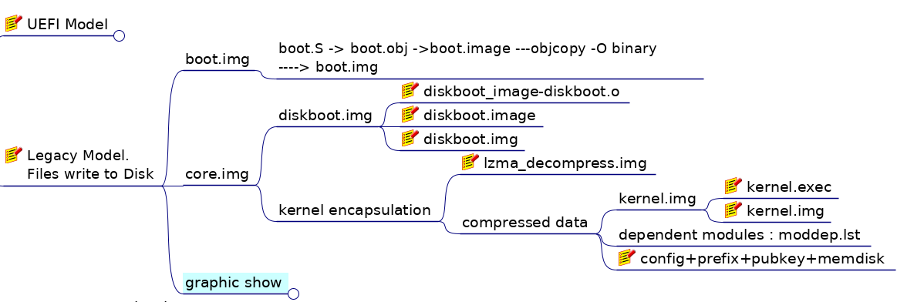

Tags: bootloader, grub2 Slug: a smal creature with small body Category: Linux Authors: Milo Summary: sth. about Grub2. Status: continuing Template: elegant
Something about Grub2
Grub2主逻辑; Main Process
grub_main
=> grub_machine_init => grub_console_init
=> grub_mm_init_region
=> grub_tsc_init
=> grub_setcolorstate + grub_printf
=> grub_load_config
=> grub_load_modules
=> grub_set_prefix_and_root
=> grub_register_core_commands
=> grub_parser_execute
=> grub_load_normal_mode => grub_dl_load ("normal")
=> grub_command_execute ("normal", 0, 0)
So, some questions rised:
Which function call grub_main?
...
How those command line organized?
Flowchart of Grub2 running
